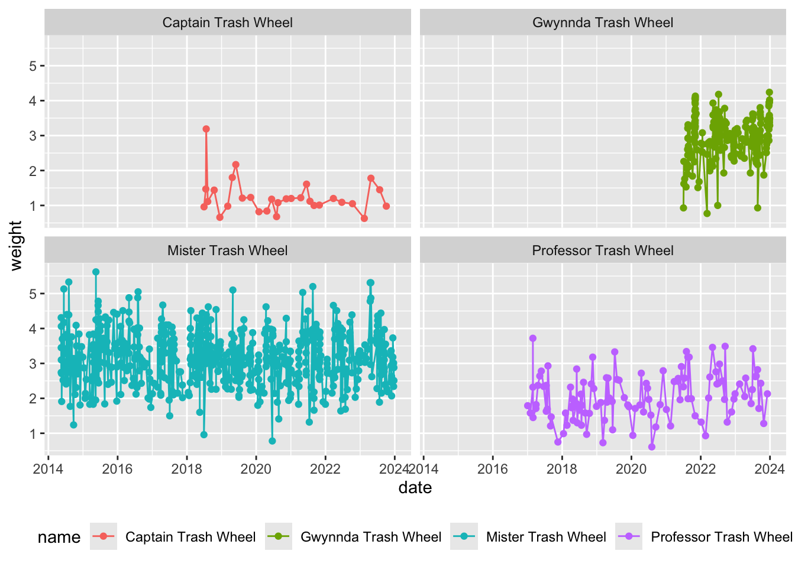
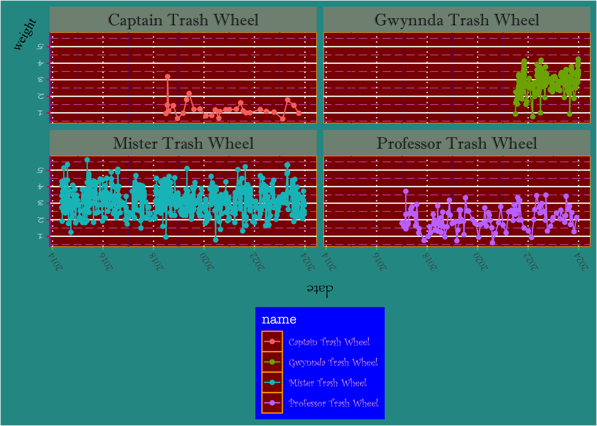

# read in packages
library(tidyverse)
# read in data
trashwheel <- read_csv(here::here("workshop", "data", "trashwheel.csv"))Why make an ugly plot?
Making ugly things is a good way of getting over the barrier of getting to something good - sometimes you just need to get something down on paper (or code, as it were) to get started.
The only issue is that there are lots of little things to tweak in ggplot() or any other code to make a visualization, and it can be hard to parse all the little components when you’re trying to make a good figure you can put in a presentation or report or paper.
However, if you’ve made an ugly plot, you will likely have already learned about all the components in a ggplot object that you can control.
Problem
Take the visualization you made for Workshop 4 and make it ugly. If you feel compelled to do so, post it on the discussion forum on Canvas so that everyone can marvel at your ugly plot!
Starting out
This is a figure using the Trash Wheel data set from Workshop 4.
I’m going to start with a basic plot with date on the x-axis and weight on the y-axis. I’ll also create lines and points representing the trash collected by each trash wheel.
trash_plot <- ggplot(data = trashwheel, # use the trash wheel data frame
aes(x = date, # put date on the x-axis
y = weight, # put weight on the y-axis
color = name)) + # color everything by the name of the trash wheel
geom_point() + # make a layer of points
geom_line() + # make a layer of lines
theme(legend.position = "bottom") + # put the legend on the bottom
facet_wrap(~ name) # separate the trash wheels into different columns
trash_plot
From this visualization, it seems that the original Mister Trash Wheel collects more trash in weight than the other trash wheels. What are the units of weight? Who knows!
Making things worse
You can play around with the theme() arguments to really make your ugly plot shine. If you add each argument one by one (for example, I added axis.title.x, looked at the output, then added axis.title.y and so forth), you can start to understand which argument goes with what part of the plot.
trash_plot +
theme(
# axis adjustments
axis.title.x = element_text(angle = 180, family = "Papyrus"),
axis.title.y = element_text(angle = 60, family = "Times New Roman"),
axis.text.x = element_text(angle = 120, family = "Garamond"),
axis.text.y = element_text(color = "lightblue", angle = 180, family = "Bradley Hand"),
axis.ticks.y = element_line(color = "red"),
axis.ticks.x.bottom = element_line(color = "limegreen"),
axis.line.y = element_line(color = "purple"),
# legend adjustments
legend.background = element_rect(fill = "blue"),
legend.direction = "vertical",
legend.title = element_text(color = "white", family = "American Typewriter"),
legend.text = element_text(color = "pink", family = "Curlz MT"),
# panel adjustments
panel.background = element_rect(color = "orange", fill = "darkred"),
panel.grid.major.x = element_line(linetype = 3),
panel.grid.minor.x = element_line(linetype = 6, color = "purple4"),
panel.grid.minor.y = element_line(linetype = 5, color = "orchid"),
# plot (as in, everything that's not the panel)
plot.background = element_rect(fill = "#289793"),
# strips for the facet
strip.background = element_rect(fill = "#809283"),
strip.text = element_text(size = 14, family = "Imprint MT Shadow")
)
Take the plot you made in workshop and make it ugly. If you want to share your plot, post it on the discussion forum in Canvas!